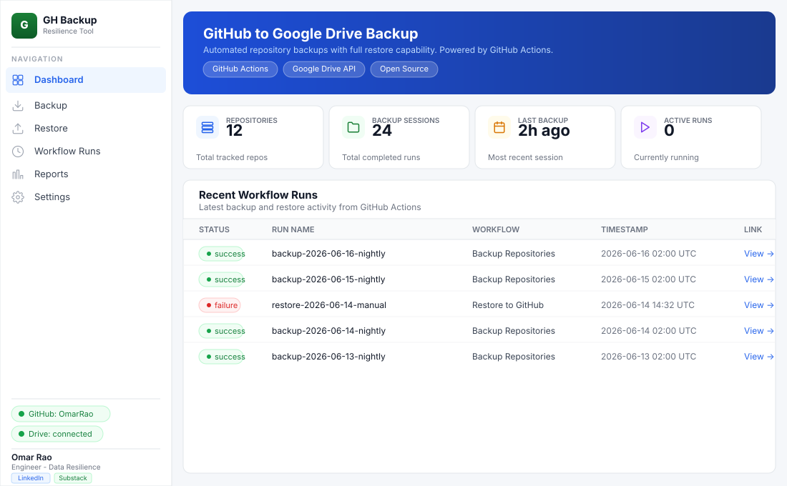
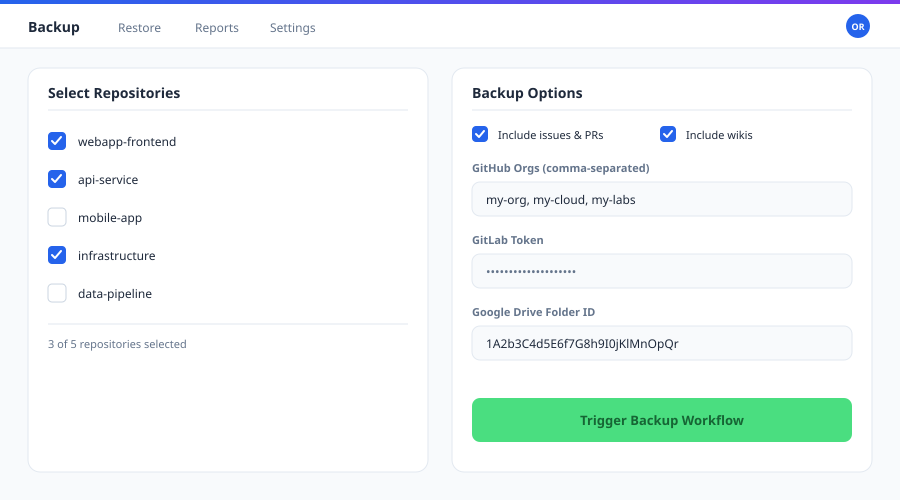
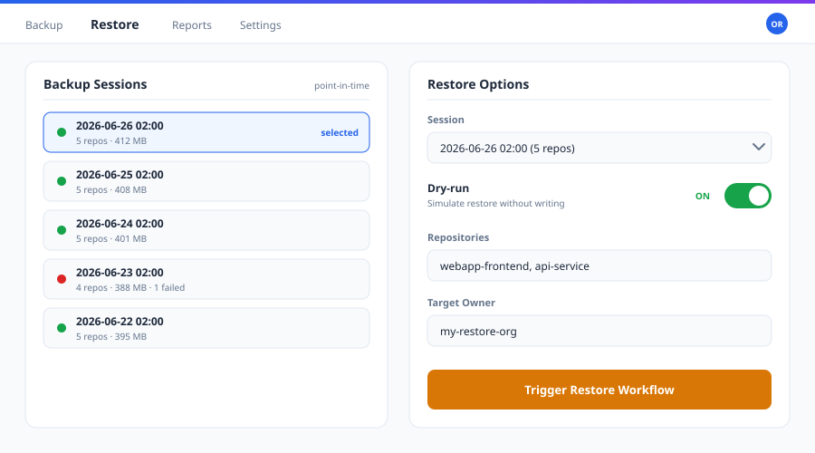
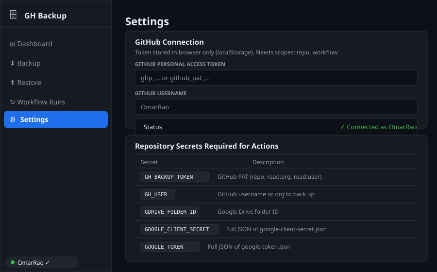

omarrao.github.io/github-gdrive-backup/

Dashboard
Overview of all repositories, backup sessions, last backup time, and active runs — plus a live workflow run history table.
omarrao.github.io/github-gdrive-backup/#backup

Backup
Select individual repos or all at once. Choose exactly what to include — code, issues, PRs, releases, wiki, labels, milestones — and trigger the workflow with one click.
omarrao.github.io/github-gdrive-backup/#restore

Restore
Browse timestamped backup sessions live from Google Drive. Select a session, specify target repos and owner, then trigger the restore workflow directly from the dashboard.
omarrao.github.io/github-gdrive-backup/#settings

Settings
Configure GitHub token, connect Google Drive via OAuth, verify your backup folder, and find all required Actions secrets. All tokens stay in localStorage — never sent to a third party.